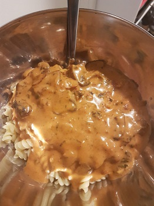

Pilzrahmsoße
Zubereitungszeit: 15min
Ergibt: 2 Portionen

- 1 Zwiebel/Zwiebelgrün/Frühlingszwiebel
- 6 große Pilze
- 100g Speck
- 1EL Tomatenmark
- 200ml Gemüsebrühe
- 200ml Sahne (alternativ 300ml Milch, dann länger verkochen lassen)
- Pfeffer
- Pilze in größere Stücke schneiden, anbraten. Aus der Pfanne nehmen, sobald sie wässern
- Speck anbraten, Zwiebel dazugeben, Tomatenmark und einen Schluck Gemüsebrühe dazugeben
- Verrühren und 1 Min anrösten
- Mit restlicher Gemüsebrühe und Sahne ablöschen, mit Pfeffer würzen
- Bis zu sämiger Konsistenz köcheln lassen